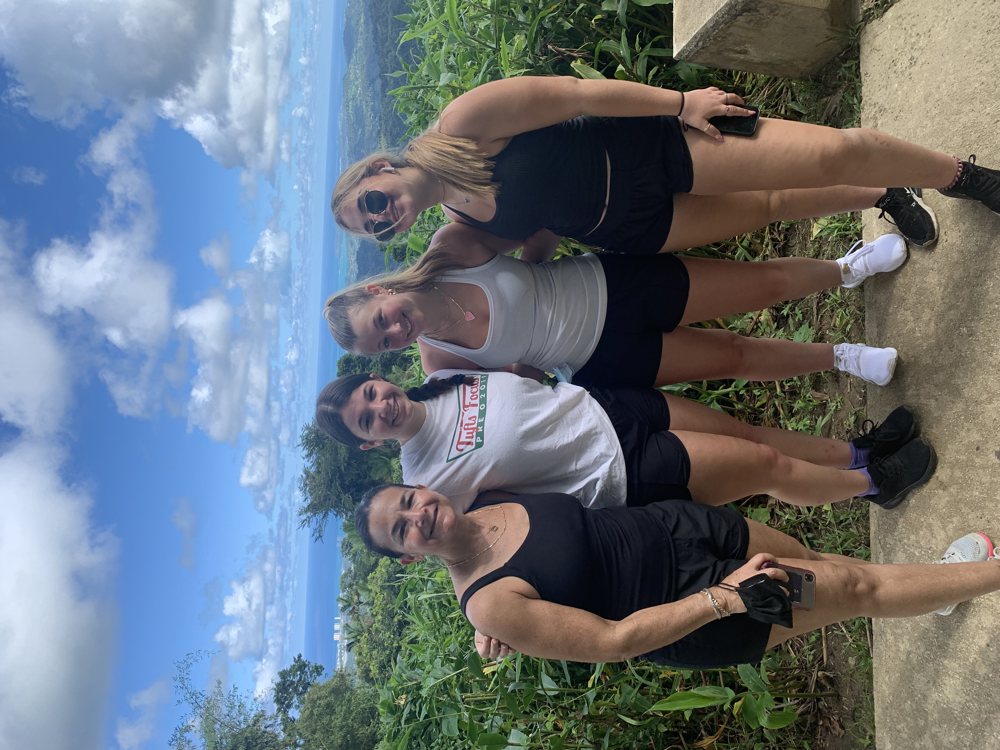
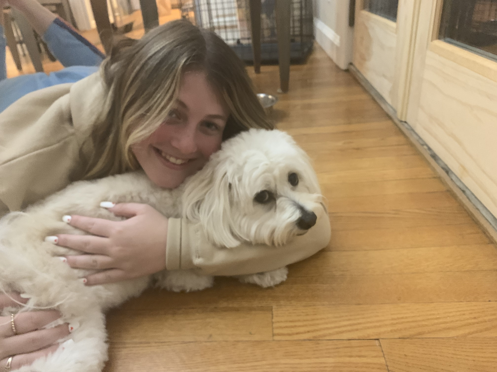
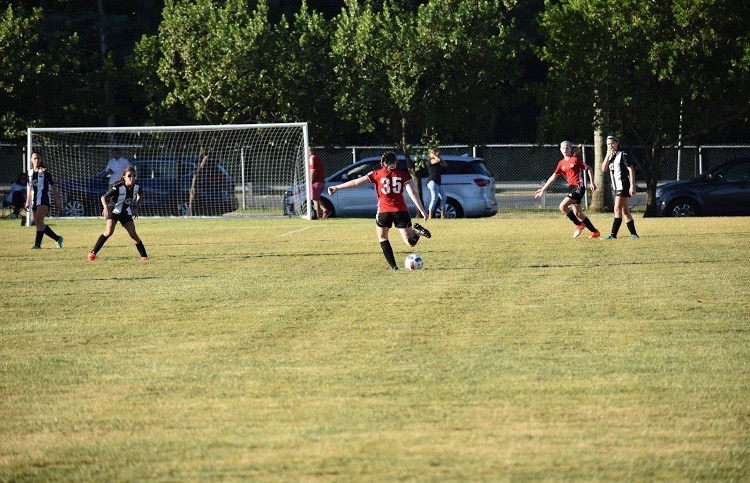
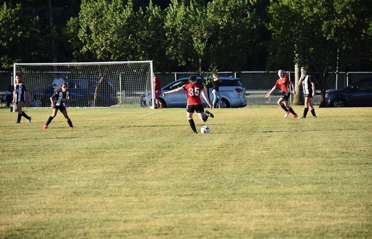

Childhood
 Hi, my name is Haley Lewis. Im from Newton MA which is 10 minutes outside Boston. I have two sisters and a mom and a dad. I have a dog named ryder. I love hanging out with friends, my dog, and traveling. I've played many sports my whole life and played soccer all the time. I got to Elon University and am majoring in Communications Design.
Education
 

I went to Memorial Spaulding Elementary school. I went to Oak Hill Middle School and went to Newton South High School. I played soccer for 2 years in high school until I got injured to many times. I helped with the school newspaper and loved going to school sports events. At Elon University I'm in a sorority called Phi Mu. I also am part of club tennis.